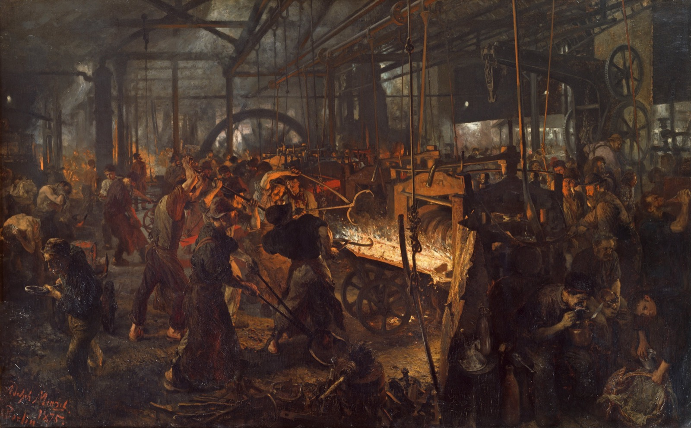

Somewhere right now, a person is building something they will never be able to afford. They are on a line putting together a car, or a phone, or a kitchen full of appliances, and at the end of the shift they will clock out and ride the bus home to none of it. Nobody finds this strange. It is just how the thing works.
Karl Marx found it strange. He spent thirty years on the question hiding under that assembly line: when work creates wealth, where does the wealth go, and why is it so rarely to the people who did the work?
His short answer is a pamphlet he wrote in 1848 with Friedrich Engels. Marx was twenty-nine and usually broke. Engels, who put up the money, was the son of a mill owner and was at that moment helping run the family's cotton factory in Manchester, an odd day job for the co-author of the workers' bible. The Communist Manifesto runs about twelve thousand words, shorter than what you are reading now. Outside of national constitutions and holy books, it may be the most widely read political document ever written. And it has two reputations that do not seem to belong to the same text.
To one set of readers it is the sharpest X-ray anyone ever took of capitalism, a book that saw the global market and the disposable job coming a century early. To another it is the founding document of a movement that, in the hundred years after Marx died, built police states and starved its own people by the tens of millions. Both of those are true at once. This is a walk through the actual argument, so you can see how one short book manages to be both.

You need three plain words before we start, because Marx leans his whole weight on them.
We go in eight stops, in Marx's own order: first what he thought was broken, then what he thought would fix it, and at the end, the reckoning the book earned. On the most famous line in it, where the wording has been fought over for a century, you can open a panel and see the versions side by side.
Stop 1 / The first sentence
History is a fight over who owns the work
The Manifesto, opening of Section I
The history of all hitherto existing society is the history of class struggles.
Freeman and slave, patrician and plebeian, lord and serf, guild-master and journeyman, in a word, oppressor and oppressed, stood in constant opposition to one another.
Most history is told as a story of ideas and great men. Kings, wars, religions, the clever inventions of clever people. Marx says: stop watching the kings and follow the stuff. In every society there is a small group that owns the means of making things, and a large group that does the making, and the first group lives off the second. Master and slave. Lord and serf. Owner and worker. Whoever owns the way everyone eats sets the terms for everyone else.
History, in this telling, is the long fight between those two groups. And it moves not when someone wins an argument but when the way we make things outgrows the way we own them. Feudalism did not end because a philosopher refuted it. It ended because a new method of getting rich, trade, towns, workshops, manufacturing, grew up inside it and burst the old arrangement of lords and land apart. The merchants who would become the new ruling class were nobodies under the old one. The engine of the whole story is not what people believed. It is who owned the work.
That is the idea everything else hangs on, and it is worth seeing how much it explains before you decide whether it explains too much. Once you start asking of any era "who owned the means of life, and who had to sell themselves to its owners," a lot of the past stops looking like a pageant of leaders and starts looking like a series of arrangements about property, each one defended as eternal right up until it broke.
Stop 2 / The strange praise
Capitalism is the most revolutionary force in history
The Manifesto, Section I
All that is solid melts into air, all that is holy is profaned, and man is at last compelled to face with sober senses his real conditions of life, and his relations with his kind.
Here is the part nobody who skipped the book expects. Before Marx attacks capitalism, he praises it, and not politely. The bourgeoisie, he writes, "has played a most revolutionary part." It tore down the whole frozen feudal world of lords and serfs and guilds and inherited place, and put in its place something that never holds still. It "has accomplished wonders far surpassing Egyptian pyramids, Roman aqueducts, and Gothic cathedrals." In about a hundred years, he says, it built more productive power than every previous century of human beings combined. He means every word of it. The great enemy of capitalism is also its most astonished fan.
The line above is his sharpest. Capitalism's genius, he saw, is also a kind of permanent vertigo. The system stays alive by tearing itself up and rebuilding, constantly, on purpose. Tools, trades, skills, whole industries and the towns built around them, all of it gets junked the moment something cheaper comes along. Nothing is allowed to settle into "the way things are." Every few years the ground moves under you again.
Read that in 1848 and it is prophecy. The market that, in his words, "must nestle everywhere, settle everywhere," that pulls every country on earth into one web of buying and selling and remakes each one in its image, is the thing we now call globalization, described before the railway map of Europe was even finished. Marx is the man who wrote capitalism's best advertisement. He just thought the machine would eventually run over the people feeding it.
Stop 3 / The great divide
Everyone ends up on one of two sides
The Manifesto, Section I
Society as a whole is more and more splitting up into two great hostile camps, into two great classes directly facing each other: Bourgeoisie and Proletariat.
As capitalism grows, Marx says, it sorts. The old crowded ladder of ranks, nobles and clergy and guildmasters and journeymen and peasants, collapses into two rungs. On one side, the people who own the means of production and live by employing others. On the other, the people who own none of it, and so have exactly one thing to sell. Their ability to work.
That is the line he cares about, and it is not the line we usually draw. It is not income, and it is not lifestyle. A well-paid engineer and a janitor are on the same side of Marx's line, because both of them eat only as long as someone keeps buying their hours. The owner is on the other side, not because he is richer this year, but because he could stop showing up and still get paid, by the work of everyone he employs. The question is never "who has more." It is "who owns the thing that makes the money, and who has to rent themselves to it."
There is something genuinely new here, and Marx is careful about it. The worker is free in a way the serf never was. He can quit, move, sell his work to this boss or that one. He just cannot sell it to nobody, because then he starves. It is a real freedom and a real trap at the same time, and that double thing, free to choose your owner, not free to have none, is the knot the rest of the book tries to cut.
Stop 4 / Alienation
The thing you build and can't buy
Economic and Philosophic Manuscripts of 1844
The worker becomes all the poorer the more wealth he produces. The worker becomes an ever cheaper commodity the more commodities he creates.
The object which labor produces confronts it as something alien, as a power independent of the producer.
Back to the worker on the line, building the car that will never be his. Marx had a word for what is happening to him: alienation. He worked it out in a notebook in 1844, years before the Manifesto, that nobody read until 1932, almost fifty years after he died. It is the most human thing he ever wrote.
The idea is this. A person pours their days, their attention, their strength into making something, and the thing comes out the far end belonging to someone else and standing over them like a stranger. The more you make, the bigger and richer the world of products grows, and the smaller and cheaper your slice of it gets. You are not building your own life. You are building someone else's wealth, one identical unit at a time, and the Manifesto's image for you is exact and unkind. You become, it says, "an appendage of the machine."
Marx breaks the estrangement into pieces, and they are easy to feel. You are cut off from the thing you make, because it is not yours. From the act of making it, because it is repetitive and someone else set every step. From yourself, because work should be the place a person becomes most fully what they are, and instead it is just the thing you endure to get paid. And from the people around you, because the system has turned them into your competitors for the same job. The heart of the complaint is not really the wages, though Marx thinks those are bad too. It is that the most human act there is, making things, has been turned into something done to you instead of something done by you.
Stop 5 / A detour into Capital
Where the profit actually comes from
Capital, Volume One
He creates surplus-value which, for the capitalist, has all the charms of a creation out of nothing.
Twenty years after the Manifesto, Marx published the brick that was supposed to prove all of it: Capital, three volumes, most of which almost nobody finishes. You need one idea out of it. He asks a flat question: where does profit actually come from? And he refuses the easy answer. Assume no one cheats, he says. Every trade is fair, every worker is paid the full going rate for their labor. There is still profit. Where?
His answer is the working day, cut in two. Say it takes you four hours of work to produce enough value to cover your own keep, your wages, the rent, the food, whatever it costs to get you back to the line tomorrow. The owner does not hire you for four hours. He hires you for eight. The first four pay for you. The second four you also work, and the value of everything you make in them belongs to him. Marx called that second stretch surplus value, and for the man who owns the factory it is, in his words, "a creation out of nothing." Profit, in this picture, is not a reward for risk or for genius. It is the part of the day you work for free.
Be fair to the other side here, because this is where Marx is weakest. The machinery under that argument, the labor theory of value, the claim that the work hours are what a thing is really worth, lost the argument in mainstream economics in the 1870s. Value, the economists decided, comes from what people will actually pay, not from the labor baked in, and Marx's careful math for turning labor into prices never quite closed. As economics, surplus value is a museum piece. As a suspicion, that the people doing the work get a thinning slice of what the work is worth, it never left, and it is back in fashion now for reasons that have nothing to do with whether his equations balanced.
One more idea from the brick, quickly, because it is too good to skip. When you buy a phone you see a price, a logo, a sleek object. What you do not see is the human labor folded inside it, the hands that dug the metal and soldered the board and packed the box. The market, Marx says, performs a quiet magic trick: it hides the relationships between people and shows you instead a relationship between things. So much money for so much phone. He called it the fetishism of commodities, "a definite social relation between men, that assumes, in their eyes, the fantastic form of a relation between things." The price tag is the spell. It makes the worker vanish.
Stop 6 / Ideology
Why the whole thing feels fair
The German Ideology
The ideas of the ruling class are in every epoch the ruling ideas: the class which is the ruling material force of society is at the same time its ruling intellectual force.
If the deck is stacked this badly, why does almost nobody rise up on a Tuesday? Marx's answer is the idea you can carry out of here even if you leave everything else on the table. The people who own the means of making things also own the means of making ideas. In his day that meant the newspapers, the schools, the churches, the publishers. Whoever runs those gets to teach everyone else what counts as normal, what counts as fair, and what is simply the way of the world.
So the ideas drifting around in any era, about who deserves what, about why the people on top are on top, tend to be the ideas that happen to suit the people on top. Not by conspiracy, most of the time. Just because they hold the megaphone, and the megaphone shapes what sounds like common sense. "The ideas of the ruling class are in every epoch the ruling ideas."
Take the belief that anyone can make it if they work hard enough. It is comforting, it is sometimes even true, and it is also precisely the belief a lopsided system needs the people at the bottom to hold, because it tells them their position is their own fault and not the arrangement's. Marx's move is to ask, of any popular idea about what is fair: who benefits from everyone believing this? You do not have to be a communist to find that question useful. It is the most durable tool he made, and it outlived his economics by a century.
Stop 7 / The cure
Capitalism digs its own grave
The Manifesto, close of Section I
What the bourgeoisie therefore produces, above all, are its own grave-diggers. Its fall and the victory of the proletariat are equally inevitable.
So what is the way out? Here Marx makes his boldest bet, and it is a clever one. Capitalism, he says, manufactures the thing that will destroy it. To make goods cheaply it has to herd workers together, off the scattered farms and into the cities, the mills, the giant shared factory floor. And in doing that it accidentally assembles the one army with the numbers and the reason to overthrow it. A million peasants alone in a million fields can do nothing. A thousand workers under one roof, doing the same job, nursing the same grievance, can talk, and count themselves, and organize. The drive for profit builds the crowd, and the solidarity, that ends the whole system. "What the bourgeoisie therefore produces, above all, are its own grave-diggers."
The cure follows from the diagnosis. If the root problem is that a few people privately own the things everyone's life depends on, then you take those things, the factories, the land, the capital, out of private hands and into common ownership. Marx boiled the whole program down to what he called a single sentence: "Abolition of private property." He meant the productive kind, the factory and the field, not your coat and your books, and the Manifesto says so plainly. End private ownership of the means of making wealth, and you end the split into owners and workers. End that split, he believed, and you end class itself, and every war and lie and indignity that class ever caused. What he pictured on the far side was not a grey barracks. It was the opposite: "an association, in which the free development of each is the condition for the free development of all."
The strangest thing about the Manifesto today is its to-do list. It ends with ten concrete demands, and reading them now is uncanny, because a pile of them simply came true, under capitalism, without a revolution firing a shot. A heavy progressive income tax. Free public schooling for every child. A national central bank. An end to child labor in factories. In 1848 these were the wild dreams of a hunted radical. Today several of them are just how Tuesday works. Capitalism, it turned out, could swallow a fair amount of Marx and keep going.
And then the ending everybody knows. Except the line everybody knows is not quite the line. The version on the posters, "Workers of the world, unite! You have nothing to lose but your chains," is a later popularization. What the 1848 text actually says, in the English translation Engels himself signed off on, is quieter and a little grander.
The most famous last line, three ways
It is probably the most quoted sentence in political history, and the form nearly everyone quotes is one nobody official ever wrote. Here is what the text actually says, against what the banners say.
A small thing, and a fitting one. Even the most famous words Marx ever put his name to reach us secondhand, sanded smooth by the people who carried them. Which is, more or less, the story of the man.
Stop 8 / The reckoning
What was done in his name
The Manifesto, Section IV
They openly declare that their ends can be attained only by the forcible overthrow of all existing social conditions.
Marx died in 1883, at his desk in London, stateless and largely ignored. He never saw a single country try his idea. The first one came thirty-four years later, in 1917, in Russia, which is close to the last place his own theory said it should happen: a backward, barely industrial empire of peasants, not one of the advanced factory democracies he was sure would go first. And then the century happened.
Governments flying his flag killed somewhere between sixty and a hundred million of their own people in the twentieth century. The exact figure is genuinely fought over, and the honest reason is ugly: it depends on choices the historians themselves disagree about, mainly whether to count deaths from famine and ruinous policy alongside deliberate executions, and where the hard archival records stop and the estimates begin. The best-known tally, the Black Book of Communism, reached for nearly a hundred million; two of that book's own authors accused their editor in print of padding the number to hit a round figure. What no serious historian disputes is the floor, and the floor is tens of millions. The single largest piece is the famine Mao drove in the Great Leap Forward, with deaths estimated from fifteen to forty-five million, the deadliest famine in recorded history. Add Stalin's terror and his engineered famines, the Gulag, and the Khmer Rouge marching the cities of Cambodia into the fields and killing perhaps a quarter of the country. The list is long, and it is real.
So is that Marx's fault? It is the question the whole walk has been heading toward, and the honest answer is that it is genuinely contested, so here are both cases as hard as they go.
The case that it lands on him: he called for abolishing private property, for "the forcible overthrow of all existing social conditions," for centralizing all production "in the hands of the State." He wrapped it in a theory of history so sure of its happy ending that a true believer could justify nearly anything as helping the inevitable along a little faster. Give a movement that much certainty and that much license, this argument runs, and the camps are not an accident.
The case that it does not: he died decades before any of it, expecting the revolution in free industrial nations, not peasant autocracies. He left almost no instructions for running a state, and mocked the very demand that he write "recipes for the cook-shops of the future." His one real sketch of workers in power was the Paris Commune of 1871, which he praised for being elected and instantly recallable, the opposite of a secret police. His own orthodox followers said at the time that Lenin was betraying him. And the final goal in his own words is "the free development of each." The Gulag is not in there.
I am not going to pretend to settle a fight that the historians have not. The fair summary is narrower and stranger than either side wants. Marx wrote a furious, brilliant diagnosis and almost no prescription, and into that empty space, in a country he swore it should not happen in, other men poured a catastrophe. Whether the empty space invited the horror or merely failed to prevent it is the argument that will not end.
And yet. Set the prophecy and the body count aside, look at only the diagnosis, and something uncomfortable happens: a lot of it reads like this morning. He got the big predictions wrong, and it is worth saying so flatly. Workers in rich countries got richer, not poorer. The revolutions came in the wrong places. The world did not collapse into two armed camps, and economists threw out his theory of value. But the man who in 1848 described a world being torn up and remade by a global market that melts every solid thing and turns more and more of life into something bought and sold was describing our exact world from a hundred and seventy years off. The concentration of wealth, the booms and the crashes, the slow widening of the gap between what money earns and what work earns, the worry that the stories we are sold about fairness might quietly serve someone. These are live questions, and he asked most of them first.
That is what makes Marx so hard to file and be done with. The cure he prescribed was poison, it is right there in the book, and the body count ran to tens of millions. The diagnosis he wrote was, in places, the best anyone has managed. You have to hold both at once, because the regimes that kept only the first dug the real graves, and the boosters who keep only the second are selling you something too. Somewhere a person is still building something they will never own, and still not quite finding it strange enough to stop. Marx's lasting gift was never the answer he gave. It was that he looked at that person and refused to call it normal.
Where the words come from
The featured text throughout is the Communist Manifesto in Samuel Moore's 1888 English translation, the standard one, edited and footnoted by Friedrich Engels, and long in the public domain. Every quotation is verbatim, British spelling and all ("revolutionising," "grave-diggers," "labour"). The bits of Capital are from the 1887 Moore and Aveling English edition, also public domain.
- The Manifesto and Capital are quoted from the texts at the Marxists Internet Archive, checked against the page images.
- The alienation passages (stop 4) are from the Economic and Philosophic Manuscripts of 1844, and the line on ruling ideas (stop 6) is from The German Ideology (1845 to 1846). Both were notebooks Marx never published. Neither saw print until 1932, almost fifty years after he died, which is why the young, more philosophical Marx and the old economist can sound like two different writers.
- The death tolls (stop 8) follow the mainstream demographic scholarship, given as ranges because the specialists give ranges. The Great Leap famine figures are from Yang Jisheng, Frank Dikötter, and Judith Banister; the Black Book of Communism is Courtois and others (1997), and the criticism of its headline number comes from two of its own contributors, Nicolas Werth and Jean-Louis Margolin. The Cambodia estimate is Patrick Heuveline's.
- The interpretive fight over whether the regimes followed Marx or betrayed him draws on the Stanford Encyclopedia of Philosophy entry on Marx, with the continuity case put most forcefully by Leszek Kolakowski and the betrayal case by Marx's own quarrel with how Lenin read him.
The reading of the argument is mine. I have tried to let the critique land at full strength and to keep the record fully visible, rather than flattening either one to make a cleaner story. Where the famous wording and the actual text part ways, as with the closing slogan, I went with what Marx and Engels actually approved and showed you the popular version beside it.
The painting in the opening and on the homepage card is Adolph Menzel's The Iron Rolling Mill (Modern Cyclopes), painted 1872 to 1875 and held at the Alte Nationalgalerie in Berlin, in the public domain. Menzel went to real mills and drew the workers from life, which is why it is the closest thing we have to a photograph of the world Marx was arguing about.